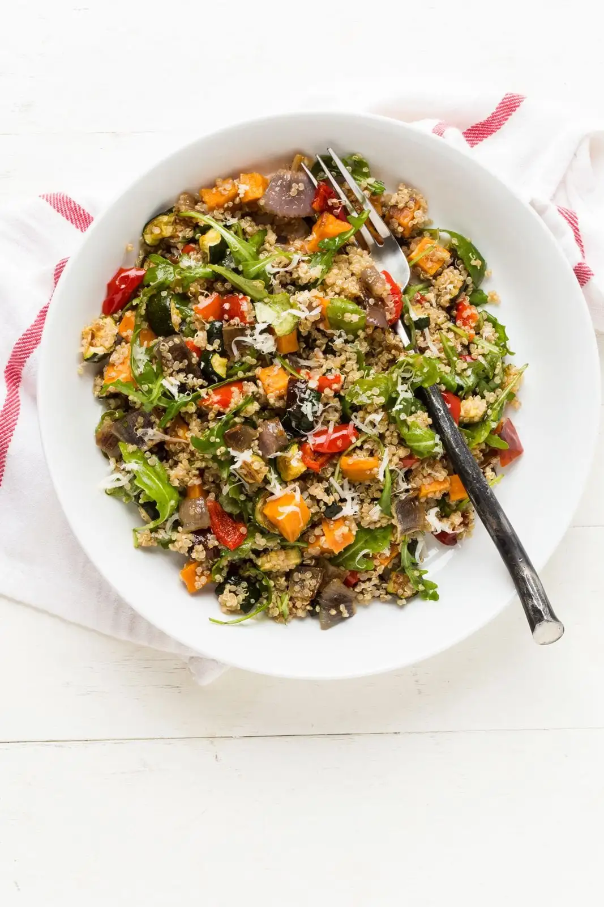

Tazón de quinoa con vegetales asados
Ingredientes
Para 2 personas:
- 100 g de quinoa
- 1 calabacín pequeño cortado en cubos
- 1 pimiento rojo cortado en tiras
- 1 zanahoria cortada en rodajas finas
- 1/2 cebolla morada en juliana
- 1 cucharada de aceite de oliva
- Sal y pimienta al gusto
- 1/2 cucharadita de comino (opcional)
- Opcional: aguacate, semillas de sésamo o nueces para decorar



Instrucciones
- Lava la quinoa bajo agua fría.
- Hiérvela en 200 ml de agua con una pizca de sal durante 12-15 minutos hasta que esté tierna. Escurre si es necesario.
- Precalienta el horno a 200°C (390°F).
- Coloca el calabacín, pimiento, zanahoria y cebolla en una bandeja para hornear.
- Añade aceite de oliva, sal, pimienta y comino. Mezcla bien.
- Hornea 20-25 minutos, removiendo a mitad de cocción, hasta que estén tiernos y ligeramente dorados.
- Coloca la quinoa cocida en el fondo del tazón.
- Añade los vegetales asados encima.
- Decora con aguacate, semillas de sésamo o nueces si deseas.
consejos
- Puedes variar los vegetales según la temporada: berenjena, champiñones o brócoli quedan muy bien.
- Añade un poco de hummus o yogur natural para un extra de cremosidad.
- Para más sabor, rocía con un poco de limón o vinagre balsámico antes de servir.